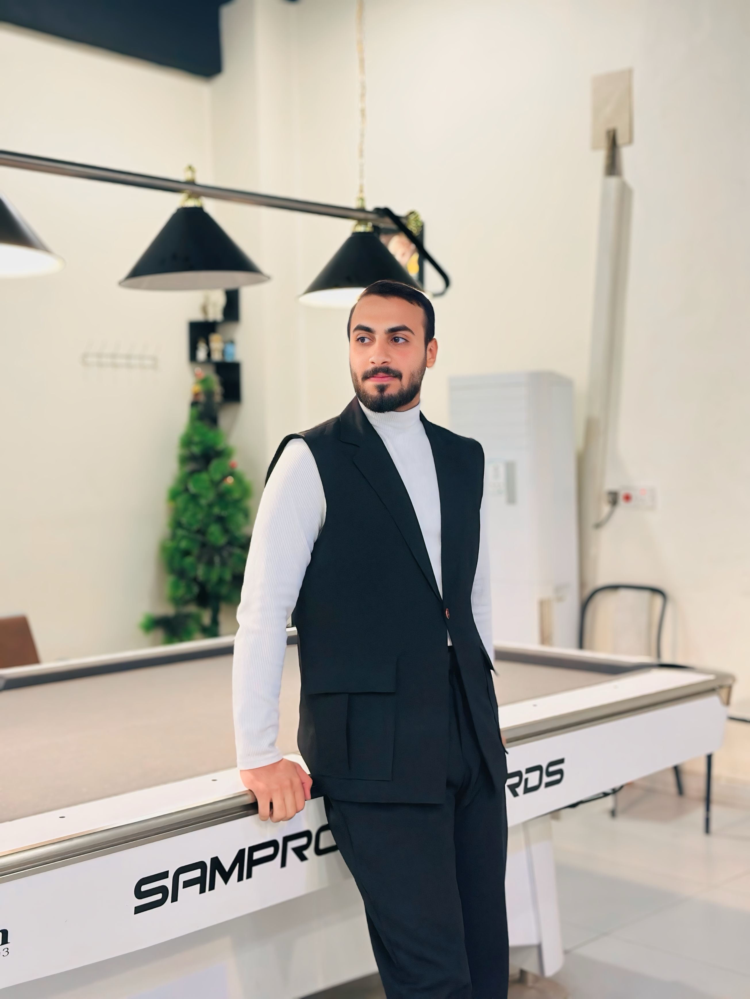

حيدر حسن عواد
مهندس تقنيات الفضاء والطائرات المسيرة | الجامعة التقنية الوسطى
مهتم بتطوير أنظمة الطائرات بدون طيار (الدرونز)، تقنيات الفضاء، والاستشعار عن بعد وتحليل بيانات الأقمار الصناعية. أسعى دائماً لتطوير مهاراتي التقنية والهندسية والمشاركة في المؤتمرات التخصصية.
برنامج ناسا للاستشعار عن بعد: بيانات الطيف الفائق لأنظمة الأراضي والواجهات البحرية
برنامج ناسا للاستشعار عن بعد: أساسيات الاستشعار عن بعد
جامعة إمبري ريدل للطيران: دورة تدريب الطيار عن بعد (ERAU Remote Pilot 101)
شهادة حضور المؤتمر الدولي الخامس للتقنيات الجيومكانية والمدن الذكية